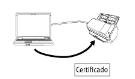

Descripción general
Network Setup Tool for fi Series es una aplicación que sirve para conectar un escáner de imagen fi Series a una red para que este esté disponible para su uso.
Network Setup Tool for fi Series incluye las siguientes herramientas.
Los modelos de escáner admitidos varían en función de la herramienta que se use para el modelo. Compruebe primero que el nombre del modelo de escáner que está usando figura entre los nombres de modelos de escáner compatibles con cada herramienta. Para obtener más detalles sobre los modelos de escáner admitidos por cada herramienta, consulte Modelos de escáner admitidos.
Herramienta de selección de escáner
Esta herramienta sirve para seleccionar el escáner que desea utilizar con el ordenador.
Puede seleccionar un solo escáner de entre los escáneres conectados a una red.
Cuando seleccione fi-8950, fi-8930, fi-8820, fi-8040, fi-8190, fi-8290, fi-8170, fi-8270, fi-8150 o fi-8250, también podrá llevar a cabo las siguientes operaciones.
Iniciar la Configuración de la red de fi Series (en un navegador web) desde la ventana [Herramienta de selección de escáner] para configurar los ajustes del escáner
Inicie Software Operation Panel en el ordenador para configurar los ajustes del escáner
Para obtener más información sobre la Configuración de la red de fi Series y Software Operation Panel (en un navegador web), consulte la Guía del usuario del escáner.

Herramienta de configuración de dirección IP
Esta herramienta sirve para configurar la dirección IP, el nombre del escáner, información relacionada con la seguridad y otra información de red.
Herramienta de registro del certificado
Esta herramienta sirve para registrar un certificado en el escáner para conectar el escáner a una red que requiera un certificado mediante Wi-Fi.
Después de registrar el certificado en el escáner, configure los ajustes de Wi-Fi en la pantalla táctil del escáner.
Los certificados que se pueden registrar son los siguientes:
Certificados del cliente: Formato de archivo PKCS#12 (*.p12, *.pfx)
Certificados de CA: Archivo de certificado de CA (*.cer, *.crt, *.der, *.pem)

Button Event Manager
Esta herramienta sirve para especificar la aplicación de digitalización de imágenes que desea que se inicie al pulsar un botón del escáner.
Utilice la Herramienta de selección de escáner para configurar el escáner conectado a una red para poder utilizarlo en un ordenador.